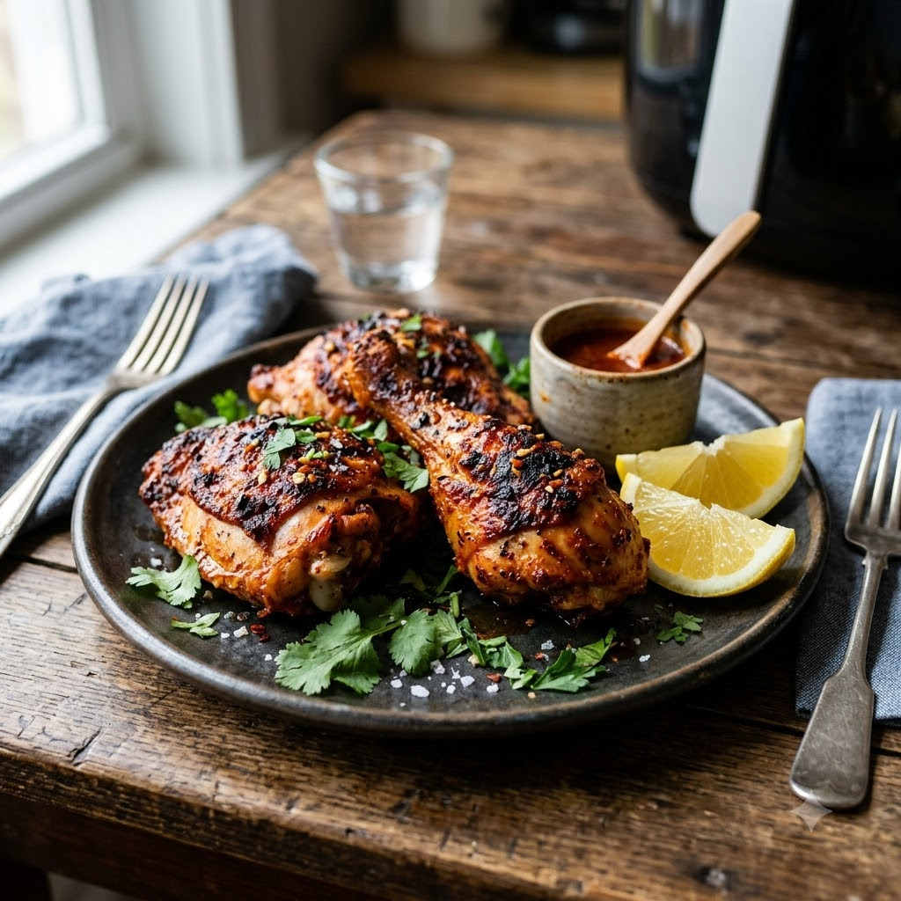

Peri Peri Chicken

Peri Peri Chicken
Airfryer – Marinate 30 min + Grill 200°C 18 min — Serves 4
Gluten-Free • High-Protein • Everyday
Prep ahead: Marinate the chicken for at least 30 minutes (overnight for deeper flavour).
Ingredients
- 500g chicken drumsticks or thighs
- 3 tbsp peri peri sauce (or blended red chillies (lal mirch), garlic (lehsun), paprika, lemon juice and oil)
- 1 tbsp lemon juice
- 1 tbsp oil
- 1/2 tsp smoked paprika
- Salt to taste
Method
1Preheat: Preheat the Airfryer to 200°C for 4 minutes before adding the food.
2Whisk together the peri peri sauce, lemon juice, oil, paprika and salt.
3Coat the chicken well in the marinade and rest for at least 30 minutes.
4Arrange the chicken in a single layer in the Airfryer basket.
5Grill at 200°C for 18 minutes, turning once, until charred at the edges and cooked through.
Tip: Baste with a spoon of the leftover marinade halfway through grilling for an extra glossy, spicy finish.